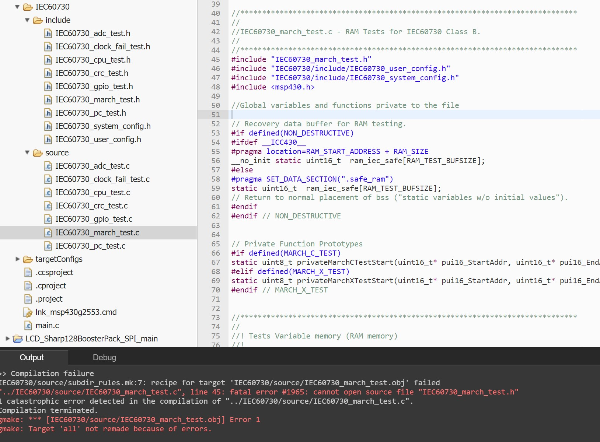

云端ccs路径配置问题
今天被云端ccs小小的坑了一下
云端ccs在建立工程的时候可以选择很多库，比如我选的这个就带有很多adc cpu gpio巴拉巴拉的库，但是报错说打不开这个IEC60730_march_test.h

正常情况下 工程右键 project properties link的地方选择路径，把.h给include就行。但是ccs没法改。。
所以只能自己把
#include "IEC60730_march_test.h"
改成以工程文件名为根目录 之后的绝对路径
#include "IEC60730/include/IEC60730_march_test.h"
版权声明：本博客所有文章除特殊声明外，均采用 CC BY-NC 4.0 许可协议。转载请注明出处 做秧歌star的女人